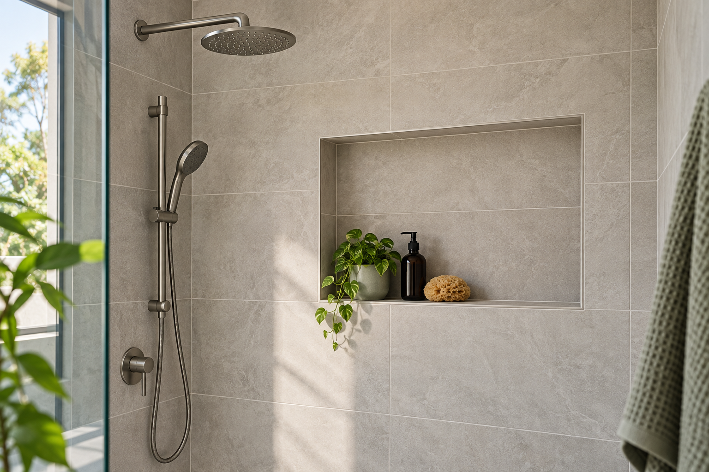

FAQs
Waterproofing and tiling questions, answered clearly.
A practical starting point for Adelaide bathroom, laundry, kitchen and tiled-surface projects.
CALL 0425 170 688Professional service guidance
Waterproofing and tiling, assessed for your property.
Send room details, photos, tile samples and measurements where available. Ellis Services Group uses them to assess the work and provide the right service response.
The questions below explain the services we deliver across Adelaide and how we assess each project.

What services are listed for Ellis Services Group in Adelaide?
The website lists waterproofing and tiling for Adelaide projects, including wet-area waterproofing services and wall or floor tiling.
How do you sequence waterproofing and tiling?
Ellis Services Group completes waterproofing before installing tile and surface finishes, creating the right base for the finished bathroom or wet area.
What rooms are covered by waterproofing services?
We provide waterproofing for bathrooms, shower areas, laundries and other wet areas across Adelaide.
Is bathroom tiling included in the site’s service information?
Yes. The site includes bathroom wall and floor tiling information for Adelaide projects.
What laundry waterproofing services do you provide?
Ellis Services Group provides laundry waterproofing for floors, wall junctions and wet-area surfaces. Send the current surface condition and intended finish with your enquiry.
What about a kitchen splashback?
Ellis Services Group provides kitchen tiling for splashbacks, feature walls and selected kitchen surfaces. Send the wall area, tile finish and cabinetry status with your enquiry.
Can Ellis Services Group help before the final tile is selected?
Yes. Ellis Services Group assesses the room, surface and intended finish, then provides the right tiling service for the project.
What does Ellis Services Group assess on an existing surface?
We assess whether the surface is newly prepared, already tiled or part of an ongoing renovation. Clear photos help us assess the work accurately.
How does Ellis Services Group handle wall and floor tiling?
We provide wall and floor tiling services based on the room, surface, tile finish and any waterproofing work required.
What project details should I send Ellis?
Send the room type, approximate dimensions, current surface condition and a short project description. Ellis Services Group uses these details to assess the required service.
What photos help Ellis Services Group assess the work?
Send wide photos of the room and clear close-ups of the surface or damaged area so we can assess the required service.
What should my service enquiry include?
Include the room, required waterproofing or tiling service, current stage and finish required.
Which service should I select?
Select Waterproofing, Tiling, or Waterproofing and tiling. Ellis Services Group reviews the project details and confirms the required service in the quote.
Why does the contact form ask for a suburb or property address?
This field gives location context for an Adelaide enquiry. A suburb is sufficient when you do not want to enter a full address.
Can I book tiling without a tile sample?
Yes. Ellis Services Group assesses the room type, surface and required finish, then provides the right tiling service for the project.
Can I call instead of using the enquiry form?
Yes. The phone number displayed throughout the website is 0425 170 688.
Can I email instead of using the enquiry form?
Yes. The listed email address is handyman.lyric@outlook.com.
What happens when I submit the enquiry form?
The form sends your enquiry to Ellis Services Group. Include the room, surface and requested service so we can respond with the right context.
Where can I read more before contacting Ellis?
Use the Waterproofing Adelaide, Bathroom Waterproofing Adelaide or Services page for the information most relevant to your project.
Where are the contact details?
Open the Contact page, call 0425 170 688, or email handyman.lyric@outlook.com.
Explore our professional services
Book the service that matches your work area: Waterproofing Adelaide, Bathroom Waterproofing Adelaide or Tiling services.